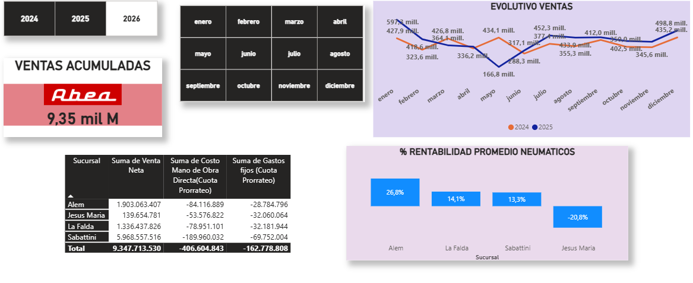
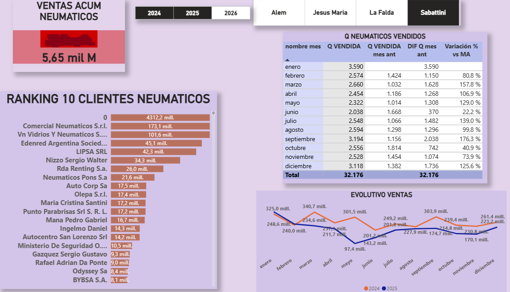

Trayectoria
18 años en multinacionales (Ex-Arcor). Optimización de procesos y rentabilidad para PyMEs.
Contactar por WhatsAppServicios Especializados
Posate sobre esta sección para ver ejemplos de mi trabajo en tiempo real.
Costos y Procesos
Power BI Dashboards
Finanzas y Cashflow
Control Interno
Control de Gestión

Análisis Comercial
